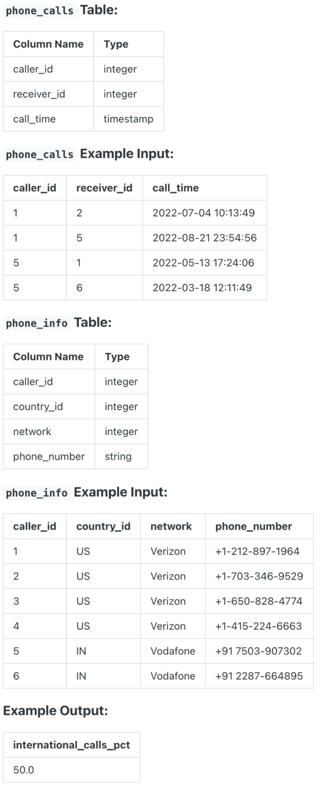

Question sourced from DataLemur.com.
Database: PostgreSQL
A phone call is considered an international call when the person calling is in a different country than the person receiving the call.
What percentage of phone calls are international? Round the result to 1 decimal.
Assumption: The caller_id in phone_info table refers to both the caller and receiver.

/*
My strategy: Join the phone_calls table with the phone_info table
twice, in order to get a column for the caller's country and the
receiver's country in the same table. Count the total number of
calls, and use conditional aggregation to count the total calls
where the caller's country is different from the receiver's country.
Wrap this result table in a CTE, then derive the percent of
international phone calls.
*/
WITH call_summary AS (
SELECT COUNT(*) AS total_calls,
COUNT(*) FILTER (WHERE i1.country_id != i2.country_id) AS total_int_calls
FROM phone_calls c
JOIN phone_info i1 on c.caller_id = i1.caller_id
JOIN phone_info i2 on c.receiver_id = i2.caller_id
)
SELECT ROUND(100.0 * total_int_calls / total_calls, 1)
FROM call_summary;